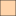

<!doctype html>
<html lang="en">
    <head>
        <meta charset="utf-8">
        <meta http-equiv="X-UA-Compatible" content="IE=edge">
        <meta name="viewport" content="initial-scale=1,user-scalable=no,maximum-scale=1,width=device-width">
        <meta name="mobile-web-app-capable" content="yes">
        <meta name="apple-mobile-web-app-capable" content="yes">
        <link rel="stylesheet" href="css/leaflet.css">
        <link rel="stylesheet" href="css/qgis2web.css"><link rel="stylesheet" href="css/fontawesome-all.min.css">
        <style>
        html, body, #map {
            width: 100%;
            height: 100%;
            padding: 0;
            margin: 0;
        }
        </style>
        <title></title>
    </head>
    <body>
        <div id="map">
        </div>
        <script src="js/qgis2web_expressions.js"></script>
        <script src="js/leaflet.js"></script>
        <script src="js/leaflet.rotatedMarker.js"></script>
        <script src="js/leaflet.pattern.js"></script>
        <script src="js/leaflet-hash.js"></script>
        <script src="js/Autolinker.min.js"></script>
        <script src="js/rbush.min.js"></script>
        <script src="js/labelgun.min.js"></script>
        <script src="js/labels.js"></script>
        <script src="data/JumlahSiswaYangMelanjutkanSekolah_1.js"></script>
        <script src="data/FasilitasPendidikanDemak_3.js"></script>
        <script>
        var map = L.map('map', {
            zoomControl:true, maxZoom:28, minZoom:1
        }).fitBounds([[-7.189976830829536,110.2574326090736],[-6.734120213357124,111.03804147126834]]);
        var hash = new L.Hash(map);
        map.attributionControl.setPrefix('<a href="https://github.com/tomchadwin/qgis2web" target="_blank">qgis2web</a> &middot; <a href="https://leafletjs.com" title="A JS library for interactive maps">Leaflet</a> &middot; <a href="https://qgis.org">QGIS</a>');
        var autolinker = new Autolinker({truncate: {length: 30, location: 'smart'}});
        var bounds_group = new L.featureGroup([]);
        function setBounds() {
        }
        map.createPane('pane_OSMStandard_0');
        map.getPane('pane_OSMStandard_0').style.zIndex = 400;
        var layer_OSMStandard_0 = L.tileLayer('http://tile.openstreetmap.org/{z}/{x}/{y}.png', {
            pane: 'pane_OSMStandard_0',
            opacity: 1.0,
            attribution: '<a href="https://www.openstreetmap.org/copyright">© OpenStreetMap contributors, CC-BY-SA</a>',
            minZoom: 1,
            maxZoom: 28,
            minNativeZoom: 0,
            maxNativeZoom: 19
        });
        layer_OSMStandard_0;
        map.addLayer(layer_OSMStandard_0);
        function pop_JumlahSiswaYangMelanjutkanSekolah_1(feature, layer) {
            var popupContent = '<table>\
                    <tr>\
                        <th scope="row">KECAMATAN</th>\
                        <td>' + (feature.properties['KECAMATAN'] !== null ? autolinker.link(feature.properties['KECAMATAN'].toLocaleString()) : '') + '</td>\
                    </tr>\
                    <tr>\
                        <th scope="row">SD ke SMP</th>\
                        <td>' + (feature.properties['SD ke SMP'] !== null ? autolinker.link(feature.properties['SD ke SMP'].toLocaleString()) : '') + '</td>\
                    </tr>\
                    <tr>\
                        <th scope="row">SMP ke SMA</th>\
                        <td>' + (feature.properties['SMP ke SMA'] !== null ? autolinker.link(feature.properties['SMP ke SMA'].toLocaleString()) : '') + '</td>\
                    </tr>\
                    <tr>\
                        <th scope="row">SMP ke SMK</th>\
                        <td>' + (feature.properties['SMP ke SMK'] !== null ? autolinker.link(feature.properties['SMP ke SMK'].toLocaleString()) : '') + '</td>\
                    </tr>\
                    <tr>\
                        <th scope="row">Jumlah</th>\
                        <td>' + (feature.properties['Jumlah'] !== null ? autolinker.link(feature.properties['Jumlah'].toLocaleString()) : '') + '</td>\
                    </tr>\
                </table>';
            layer.bindPopup(popupContent, {maxHeight: 400});
        }

        function style_JumlahSiswaYangMelanjutkanSekolah_1_0(feature) {
            if (feature.properties['Jumlah'] >= 0.000000 && feature.properties['Jumlah'] <= 2500.000000 ) {
                return {
                pane: 'pane_JumlahSiswaYangMelanjutkanSekolah_1',
                opacity: 1,
                color: 'rgba(35,35,35,1.0)',
                dashArray: '',
                lineCap: 'butt',
                lineJoin: 'miter',
                weight: 1.0, 
                fill: true,
                fillOpacity: 1,
                fillColor: 'rgba(255,255,255,1.0)',
                interactive: true,
            }
            }
            if (feature.properties['Jumlah'] >= 2500.000000 && feature.properties['Jumlah'] <= 5000.000000 ) {
                return {
                pane: 'pane_JumlahSiswaYangMelanjutkanSekolah_1',
                opacity: 1,
                color: 'rgba(35,35,35,1.0)',
                dashArray: '',
                lineCap: 'butt',
                lineJoin: 'miter',
                weight: 1.0, 
                fill: true,
                fillOpacity: 1,
                fillColor: 'rgba(255,213,170,1.0)',
                interactive: true,
            }
            }
            if (feature.properties['Jumlah'] >= 5000.000000 && feature.properties['Jumlah'] <= 7500.000000 ) {
                return {
                pane: 'pane_JumlahSiswaYangMelanjutkanSekolah_1',
                opacity: 1,
                color: 'rgba(35,35,35,1.0)',
                dashArray: '',
                lineCap: 'butt',
                lineJoin: 'miter',
                weight: 1.0, 
                fill: true,
                fillOpacity: 1,
                fillColor: 'rgba(255,170,85,1.0)',
                interactive: true,
            }
            }
            if (feature.properties['Jumlah'] >= 7500.000000 && feature.properties['Jumlah'] <= 10000.000000 ) {
                return {
                pane: 'pane_JumlahSiswaYangMelanjutkanSekolah_1',
                opacity: 1,
                color: 'rgba(35,35,35,1.0)',
                dashArray: '',
                lineCap: 'butt',
                lineJoin: 'miter',
                weight: 1.0, 
                fill: true,
                fillOpacity: 1,
                fillColor: 'rgba(255,127,0,1.0)',
                interactive: true,
            }
            }
        }
        map.createPane('pane_JumlahSiswaYangMelanjutkanSekolah_1');
        map.getPane('pane_JumlahSiswaYangMelanjutkanSekolah_1').style.zIndex = 401;
        map.getPane('pane_JumlahSiswaYangMelanjutkanSekolah_1').style['mix-blend-mode'] = 'normal';
        var layer_JumlahSiswaYangMelanjutkanSekolah_1 = new L.geoJson(json_JumlahSiswaYangMelanjutkanSekolah_1, {
            attribution: '',
            interactive: true,
            dataVar: 'json_JumlahSiswaYangMelanjutkanSekolah_1',
            layerName: 'layer_JumlahSiswaYangMelanjutkanSekolah_1',
            pane: 'pane_JumlahSiswaYangMelanjutkanSekolah_1',
            onEachFeature: pop_JumlahSiswaYangMelanjutkanSekolah_1,
            style: style_JumlahSiswaYangMelanjutkanSekolah_1_0,
        });
        bounds_group.addLayer(layer_JumlahSiswaYangMelanjutkanSekolah_1);
        map.addLayer(layer_JumlahSiswaYangMelanjutkanSekolah_1);
        map.createPane('pane_OpenStreetMap_2');
        map.getPane('pane_OpenStreetMap_2').style.zIndex = 402;
        var layer_OpenStreetMap_2 = L.tileLayer('http://a.tile.openstreetmap.org/{z}/{x}/{y}.png', {
            pane: 'pane_OpenStreetMap_2',
            opacity: 1.0,
            attribution: '',
            minZoom: 1,
            maxZoom: 28,
            minNativeZoom: 0,
            maxNativeZoom: 19
        });
        layer_OpenStreetMap_2;
        map.addLayer(layer_OpenStreetMap_2);
        function pop_FasilitasPendidikanDemak_3(feature, layer) {
            var popupContent = '<table>\
                    <tr>\
                        <th scope="row">NAMOBJ</th>\
                        <td>' + (feature.properties['NAMOBJ'] !== null ? autolinker.link(feature.properties['NAMOBJ'].toLocaleString()) : '') + '</td>\
                    </tr>\
                    <tr>\
                        <th scope="row">LUAS</th>\
                        <td>' + (feature.properties['LUAS'] !== null ? autolinker.link(feature.properties['LUAS'].toLocaleString()) : '') + '</td>\
                    </tr>\
                    <tr>\
                        <th scope="row">KATPDK</th>\
                        <td>' + (feature.properties['KATPDK'] !== null ? autolinker.link(feature.properties['KATPDK'].toLocaleString()) : '') + '</td>\
                    </tr>\
                    <tr>\
                        <th scope="row">JLPDDK</th>\
                        <td>' + (feature.properties['JLPDDK'] !== null ? autolinker.link(feature.properties['JLPDDK'].toLocaleString()) : '') + '</td>\
                    </tr>\
                    <tr>\
                        <th scope="row">FGGPDK</th>\
                        <td>' + (feature.properties['FGGPDK'] !== null ? autolinker.link(feature.properties['FGGPDK'].toLocaleString()) : '') + '</td>\
                    </tr>\
                    <tr>\
                        <th scope="row">REMARK</th>\
                        <td>' + (feature.properties['REMARK'] !== null ? autolinker.link(feature.properties['REMARK'].toLocaleString()) : '') + '</td>\
                    </tr>\
                    <tr>\
                        <th scope="row">FCODE</th>\
                        <td>' + (feature.properties['FCODE'] !== null ? autolinker.link(feature.properties['FCODE'].toLocaleString()) : '') + '</td>\
                    </tr>\
                    <tr>\
                        <th scope="row">SRS_ID</th>\
                        <td>' + (feature.properties['SRS_ID'] !== null ? autolinker.link(feature.properties['SRS_ID'].toLocaleString()) : '') + '</td>\
                    </tr>\
                    <tr>\
                        <th scope="row">LCODE</th>\
                        <td>' + (feature.properties['LCODE'] !== null ? autolinker.link(feature.properties['LCODE'].toLocaleString()) : '') + '</td>\
                    </tr>\
                    <tr>\
                        <th scope="row">METADATA</th>\
                        <td>' + (feature.properties['METADATA'] !== null ? autolinker.link(feature.properties['METADATA'].toLocaleString()) : '') + '</td>\
                    </tr>\
                    <tr>\
                        <th scope="row">JJGPDF</th>\
                        <td>' + (feature.properties['JJGPDF'] !== null ? autolinker.link(feature.properties['JJGPDF'].toLocaleString()) : '') + '</td>\
                    </tr>\
                    <tr>\
                        <th scope="row">JNSPDL</th>\
                        <td>' + (feature.properties['JNSPDL'] !== null ? autolinker.link(feature.properties['JNSPDL'].toLocaleString()) : '') + '</td>\
                    </tr>\
                </table>';
            layer.bindPopup(popupContent, {maxHeight: 400});
        }

        function style_FasilitasPendidikanDemak_3_0() {
            return {
                pane: 'pane_FasilitasPendidikanDemak_3',
                radius: 4.0,
                opacity: 1,
                color: 'rgba(35,35,35,1.0)',
                dashArray: '',
                lineCap: 'butt',
                lineJoin: 'miter',
                weight: 1,
                fill: true,
                fillOpacity: 1,
                fillColor: 'rgba(227,26,28,1.0)',
                interactive: true,
            }
        }
        map.createPane('pane_FasilitasPendidikanDemak_3');
        map.getPane('pane_FasilitasPendidikanDemak_3').style.zIndex = 403;
        map.getPane('pane_FasilitasPendidikanDemak_3').style['mix-blend-mode'] = 'normal';
        var layer_FasilitasPendidikanDemak_3 = new L.geoJson(json_FasilitasPendidikanDemak_3, {
            attribution: '',
            interactive: true,
            dataVar: 'json_FasilitasPendidikanDemak_3',
            layerName: 'layer_FasilitasPendidikanDemak_3',
            pane: 'pane_FasilitasPendidikanDemak_3',
            onEachFeature: pop_FasilitasPendidikanDemak_3,
            pointToLayer: function (feature, latlng) {
                var context = {
                    feature: feature,
                    variables: {}
                };
                return L.circleMarker(latlng, style_FasilitasPendidikanDemak_3_0(feature));
            },
        });
        bounds_group.addLayer(layer_FasilitasPendidikanDemak_3);
        map.addLayer(layer_FasilitasPendidikanDemak_3);
        var baseMaps = {};
        L.control.layers(baseMaps,{' Fasilitas Pendidikan Demak': layer_FasilitasPendidikanDemak_3,"OpenStreetMap": layer_OpenStreetMap_2,'Jumlah Siswa Yang Melanjutkan Sekolah<br /><table><tr><td style="text-align: center;"></td><td>Kurang</td></tr><tr><td style="text-align: center;"></td><td>Cukup</td></tr><tr><td style="text-align: center;"></td><td>Banyak</td></tr><tr><td style="text-align: center;"></td><td>Sangat Banyak</td></tr></table>': layer_JumlahSiswaYangMelanjutkanSekolah_1,"OSM Standard": layer_OSMStandard_0,},{collapsed:false}).addTo(map);
        setBounds();
        var i = 0;
        layer_JumlahSiswaYangMelanjutkanSekolah_1.eachLayer(function(layer) {
            var context = {
                feature: layer.feature,
                variables: {}
            };
            layer.bindTooltip((layer.feature.properties['KECAMATAN'] !== null?String('<div style="color: #000000; font-size: 10pt; font-family: \'.SF NS Text\', sans-serif;">' + layer.feature.properties['KECAMATAN']) + '</div>':''), {permanent: true, offset: [-0, -16], className: 'css_JumlahSiswaYangMelanjutkanSekolah_1'});
            labels.push(layer);
            totalMarkers += 1;
              layer.added = true;
              addLabel(layer, i);
              i++;
        });
        resetLabels([layer_JumlahSiswaYangMelanjutkanSekolah_1]);
        map.on("zoomend", function(){
            resetLabels([layer_JumlahSiswaYangMelanjutkanSekolah_1]);
        });
        map.on("layeradd", function(){
            resetLabels([layer_JumlahSiswaYangMelanjutkanSekolah_1]);
        });
        map.on("layerremove", function(){
            resetLabels([layer_JumlahSiswaYangMelanjutkanSekolah_1]);
        });
        </script>
    </body>
</html>
